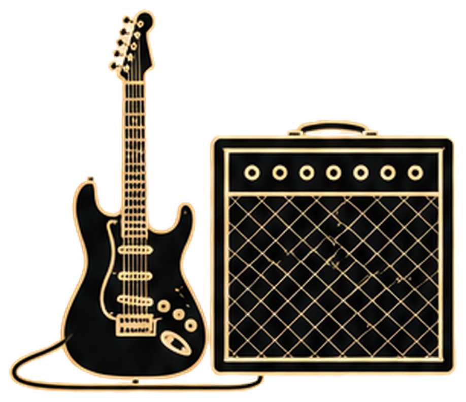

A real performance,
presented with intention.
Describe the performers, space, audio needs, and intended final use so the studio can plan the right approach.

- 01Performers
- Tell us about the band or musician.
- 02Space
- Describe the space and any special considerations.
- 03Audio needs
- Share your audio requirements.
- 04Intended use
- Let us know the intended final use.
Checkmark Tonight
The room is part of the record.
Custom quote
Describe the performers, space, audio needs, and intended final use so the studio can plan the right approach.